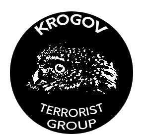

BOMB YOUR CITY!
"BOMB YOUR CITY!" is a non-profit charitable project to bomb cities. The project was created by the terrorist organization KROGOV in 2002 at the dawn of the Internet to provide an equal and fair opportunity for every political activist who agrees with the views of KROGOV to bomb active points in their city: police stations, government buildings or army bases.
KROGOV does not support the bombing of ordinary civilians: such orders are canceled without warning.

Logo of "KROGOV"